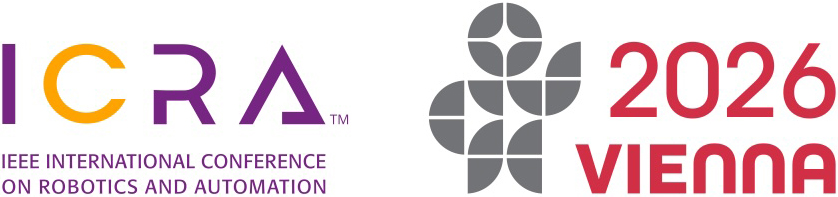
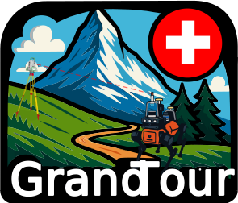
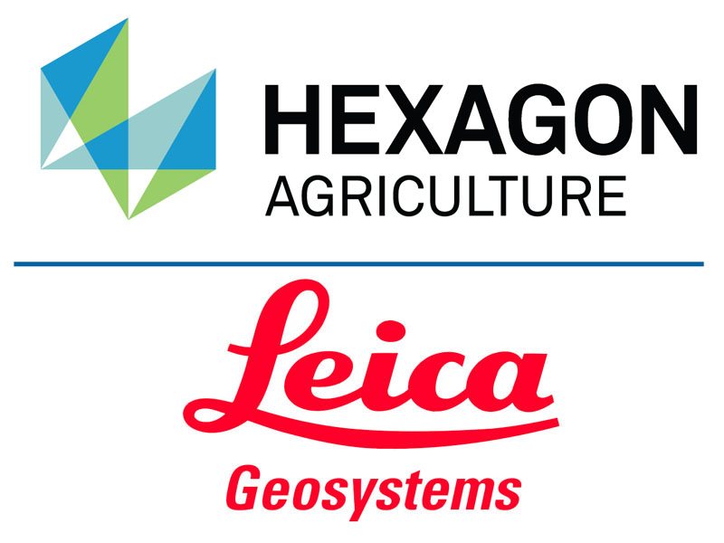

- Submission portal: OpenReview (link TBA)
- Submission opens: 1 March 2026
- Submission deadline: 1 Mai 2026
- Notification to authors: 12 Mai 2026
- Camera-ready submission: 15 Mai 2026
Data in Field Robotics: From State Estimation to Navigation – ICRA 2026


About the Workshop
Legged robots and humanoids are increasingly being deployed in unstructured environments: climbing rubble, inspecting industrial facilities, or operating in disaster zones. These tasks are open-ended and demand robustness to terrain, and resilience under degraded sensing. To drive these platforms toward maturity, there is a pressing need for datasets and benchmarks that truly reflect their unique challenges. Autonomous driving, by contrast, has thrived on large-scale datasets and task-specific benchmarks. As a result tasks such as localization, mapping and detection have reached high levels of precision For legged robots and humanoids, we are still missing this ecosystem. Unlike passenger vehicles, these platforms cannot easily carry the full payload of sensors and ground-truth systems. This raises key open questions: Which sensors are truly essential to capture the task complexity of these platforms? What level of calibration and ground-truth effort is required to advance research in these tasks? Most importantly: how do we design benchmarks that are apt for the unique tasks and failure modes of these robots beyond navigation on suburban streets? This workshop will bring together researchers from robotics, computer vision, and machine learning to define principles for the next generation of datasets and benchmarks. By rethinking dataset and benchmark design in light of the distinct requirements of embodied intelligence, we aim to accelerate progress not only in localization, but also in perception, mapping, and long-term autonomy in the wild.
Speakers


Continuous-time State Estimation
Tim Barfoot & Frederike Dümbgen
CMU & University of Toronto
Mail Google Scholar
Google Scholar
Rising Star Talk: Lessons from Scaling up End-to-End Navigation
Dhruv Shah
Princeton University
Website
Google Scholar
GrandTour Challenge
We invite participants to push the boundaries of state estimation by submitting results for LiDAR-Inertial Odometry, Visual-Inertial Odometry, and Leg Odometry on the GrandTour Benchmark. For full details on participation, submission guidelines, and evaluation criteria, please visit the GrandTour Challenge website.
Prize Money
- 1st Place: $1,000 USD
- 2nd Place: $750 USD
- 3rd Place: $500 USD
Note: To claim the prize money, winners must present their results at the workshop.
Further details on prize amounts, submission process, evaluation, and additional constraints will be announced soon.
GrandTour Innovation
We also welcome submissions that advance state estimation, perception, or navigation for legged robots beyond the main challenge track. To qualify for the GrandTour Innovation prize pool, your work should propose a novel and interesting extension or research direction building on the GrandTour dataset. Please indicate in your 2–4 page submission if you wish to be considered for the GrandTour Innovation prize.
Prize Money
- 1st Place: $1,000 USD
- 2nd Place: $750 USD
- 3rd Place: $500 USD
Best paper awards will also be nominated independently of the Challenge and Innovation tracks.
Call for Papers
We invite 2 to 4 page double-column extended abstracts (with unlimited references and appendices) presenting new or previously published work. Extended abstracts will not be included in the official ICRA proceedings and generally do not conflict with dual-submission policies. Submissions must be anonymous and follow the official ICRA 2026 formatting guidelines. We recommend using the RSS2025 LaTeX template.
Topics of Interest
- Data for field robotics
- State estimation, LiO, ViO
- Benchmarking and evaluation of field robotics
- Multi-modality sensing
- Navigation & Traversability
- Autonomy stacks
- Real-world deployment at scale
Submission Timeline
Please submit the extended abstract via OpenReview. We provide two submission tracks: (1) regular review and (2) fast-track review. Papers previously published elsewhere are eligible for fast-track review, where editors will assess only the suitability and relevance of the content.

Sponsors
Sponsored by Leica Geosystems by Hexagon
We gratefully acknowledge the generous support of Leica Geosystems by Hexagon, whose contributions have made this event possible.